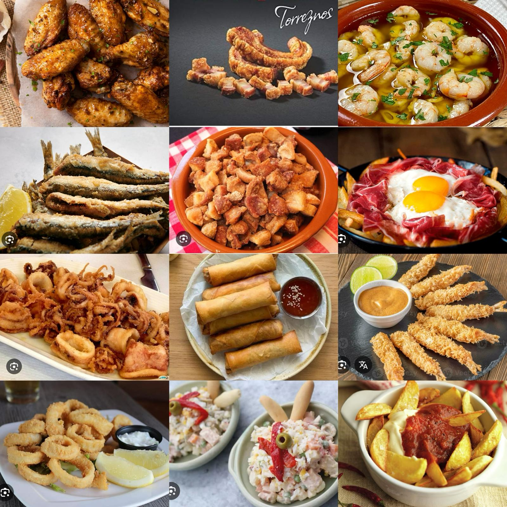

TAPAS
- BRAVAS

- PATATAS FRITAS

- HUEVO ROTO

- ROLLITOS DE PRIMAVERA

- PIMIENTOS PADRON

- ENSALADILLA RUSA

- QUESO FRITO

- TIRAS DE PECHUGA

- NUGGETS DE POLLO

- TORREZNO DE SORIA

- OREJAS A LA PLANCHA

- RABOS DE CARDO

- CHIPIRONES A LA PLANCHA

- PUNTILLA

- CALAMARES A LA ROMANA

- TELLINAS A LA PLANCHA

- GAMBAS AL AJILLO

- TEMPURA DE CAMARONES

- BOQUERONES REBOZADOS

- CROQUETAS DE JAMON IBERICO

